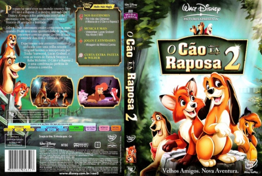

Outro Título:The Fox and the Hound 2
País:United States, 69 minutos
Idiomas falados:Espanhol, Inglês, Português
Gênero(s):Aventura, Animação, Comédia, Família
Diretor(s):Jim Kammerud
Escritor(es):Roger S.H. Schulman, Rich Burns
Codec:MPEG-2 (DVD)
Número: 5838


Certificado:L
Sinopse:
A raposa Tod e o cão Cooper têm sua amizade provada mais uma vez. Quando a cachorra Dixie sai da banda canina "Singin' Strays", o líder do grupo convida Cooper para ficar no lugar dela. Animado com a banda, Cooper esquece seu relacionamento com Tod, descobrindo posteriormente que o mundo do espetáculo é perverso, o que não é para ele.
Elenco:

Tipo de mídia: DVD5,
Legendas: Espanhol, Inglês, Português, Sem Legendas
Alugado: Não
Tela: Anamorphic Widescreen